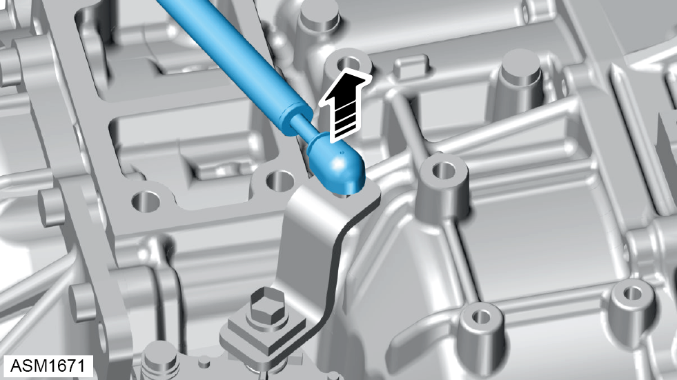
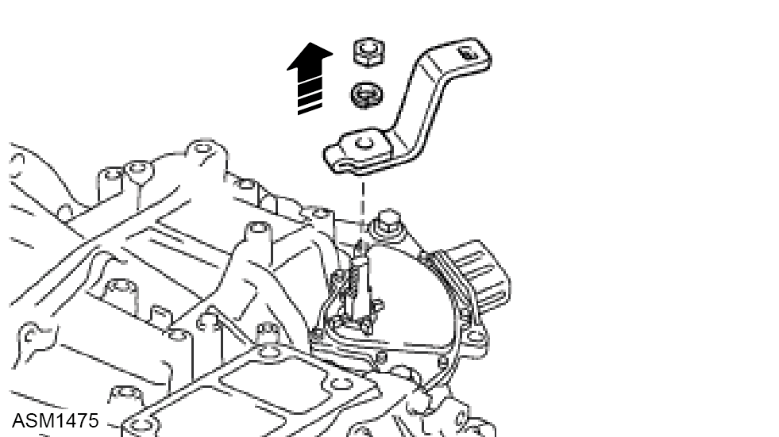
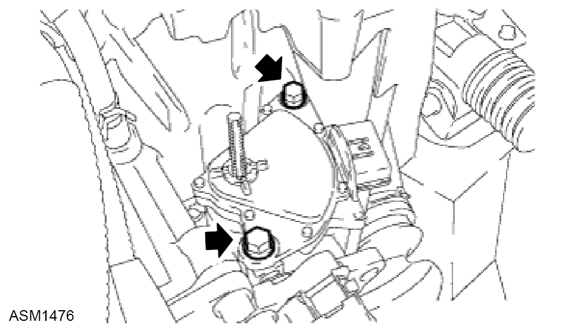
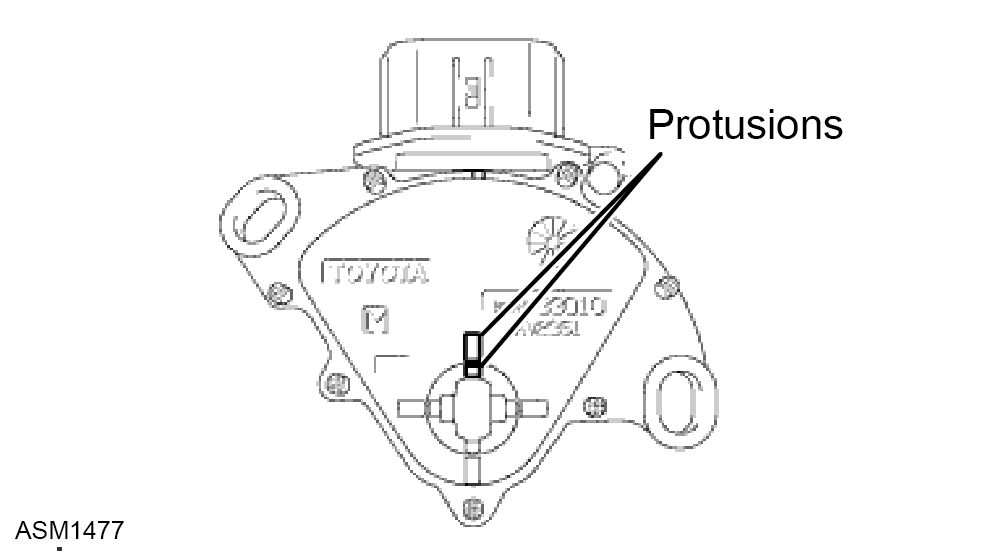

Switch Assembly - Neutral Start - V6
Print
Operation Code: 47.02.02-02
Removal
- Remove airbox assembly. Refer to procedure.

- Disconnect link rod from ball mounting on control shaft lever.
- Disconnect the connector from the park/neutral position switch.

- Remove the nut, washer and control shaft lever from the control shaft.

- Remove the 2 bolts and park/neutral position switch from the control shaft.
 CAUTION: Before removing the park/neutral position switch, remove any dirt or rust on the installation portion of the control shaft. Be sure to remove the switch straight along the shaft while being careful not to deform the plate spring that supports the shaft. If the plate spring is deformed, the park/neutral switch cannot be reinstalled correctly.
CAUTION: Before removing the park/neutral position switch, remove any dirt or rust on the installation portion of the control shaft. Be sure to remove the switch straight along the shaft while being careful not to deform the plate spring that supports the shaft. If the plate spring is deformed, the park/neutral switch cannot be reinstalled correctly.
Installation
- Move the shift lever to the N position.

- Align the protrusions of the park/neutral position switch.
- Install the park/neutral position switch to the control shaft with the 2 bolts. Torque 5.4 Nm.
- Install the control shaft lever to the control shaft with the nut and washer. Torque 13 Nm.
- Connect the connector to the park/neutral position switch.
- Connect the link rod to ball mounting on control shaft lever.